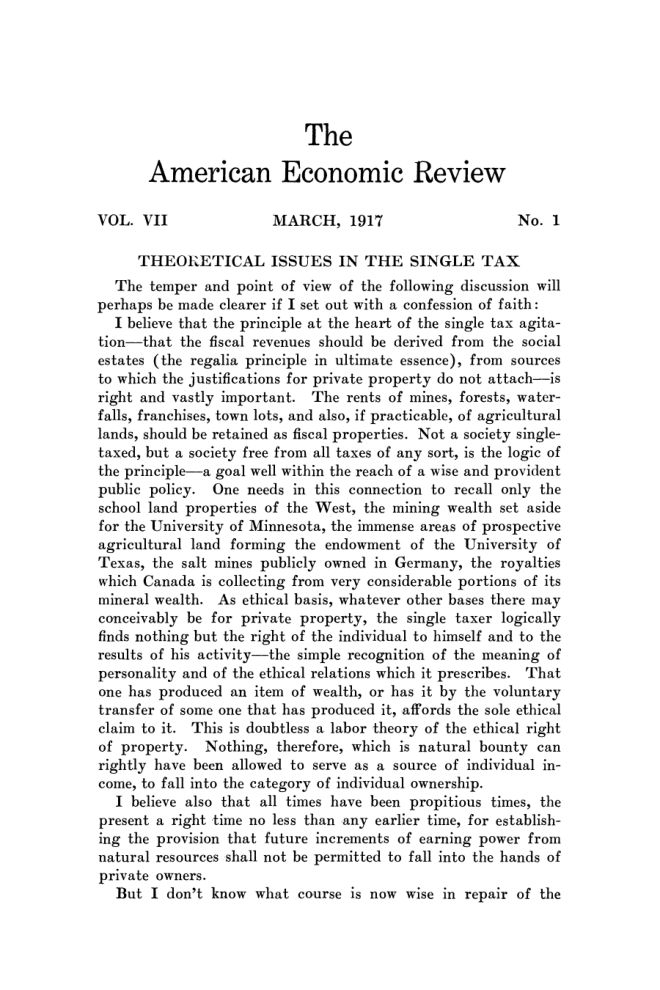

Davenport, 1917: o imposto único entre o princípio e a confiscação
Leitura: 8 min
H. J. Davenport defende que a renda dos bens naturais pertence ao fisco, recusa a confiscação dos donos atuais e examina, um a um, os argumentos técnicos a favor e contra o imposto único.


Na Rua State, em Chicago, a meio caminho entre o centro comercial e os antigos bairros residenciais, quarteirões de construções baratas e sem manutenção abrigavam bares, restaurantes ordinários, espetáculos de quinta categoria e outros negócios que as autoridades toleravam. Por que ninguém as substituía? Porque ainda não se sabia quão bom teria de ser o prédio para render mais a longo prazo, responde H. J. Davenport, da Cornell University. Esperar era sensato, e nenhum imposto mudaria isso.
O exemplo está no artigo que abre o número de março de 1917 da American Economic Review, uma discussão das questões teóricas do imposto único sobre a terra. Davenport escreve como simpatizante, um defensor da observância mais frouxa, como ele mesmo diz, e por isso suas objeções miram sobretudo os argumentos, e não o princípio.
Qual é a profissão de fé?
O princípio no centro do movimento, diz Davenport, está certo e é muito importante: as receitas públicas deveriam vir dos patrimônios sociais, fontes às quais não se aplicam as justificativas da propriedade privada. As rendas de minas, florestas, quedas-d'água, concessões, terrenos urbanos e, se possível, terras agrícolas deveriam ficar com o fisco. Ele lembra as terras escolares do Oeste, as minas reservadas à University of Minnesota, as terras que dotam a University of Texas, as minas de sal públicas da Alemanha e os royalties que o Canadá cobrava sobre parte de seus minérios.
“Não uma sociedade com imposto único, mas uma sociedade livre de qualquer imposto.” (“Not a society singletaxed, but a society free from all taxes of any sort”)
A base ética do defensor coerente do imposto único seria o direito do indivíduo a si mesmo e ao resultado de sua atividade. Por isso Davenport o descreve como um individualista do tipo mais radical, a antítese do socialista: só aceita a propriedade social onde nenhuma propriedade individual pode se justificar, deixa a exploração da terra à concorrência e socializa apenas o recebimento da renda.
Por que o imposto ad valorem não serve?
O primeiro problema técnico é o método. Quando a meta é tomar a renda, o caminho certo seria tomá-la diretamente, e não cobrar uma porcentagem do valor da terra, porque o valor cai a cada aumento do imposto. Num terreno que rende US$ 50 e vale US$ 1.000, tomar US$ 10 reduz o preço a US$ 800, e a alíquota precisa ser de 1 1/4%, e não de 1%. Para tomar quase toda a renda, a alíquota teria de crescer sem limite. Davenport aproveita para admitir que errou ao dizer que o método só alcançaria metade da renda: Edgar H. Johnson o corrigira em 1910, e ele nunca respondeu porque não podia.
O defeito mais grave é outro. Tributar o valor presente de um terreno que ainda não rende é cobrar hoje por uma renda futura e, ao mesmo tempo, pretender tomá-la quando ela surgir: dois impostos onde só um pode ser justo. A regra geral, para Davenport, é que a renda corrente é o único objeto apropriado da tributação corrente. Ele aplica o raciocínio às florestas, às minas e a uma renda vitalícia: US$ 1.000 pagos aos 30 anos compram cerca de US$ 250 por ano a partir dos 60, e o imposto sobre a propriedade cobraria cada ano mais sobre um direito que ainda não rendeu nada.
“Antecipar o incremento por meio de impostos é um contrassenso.” (“To anticipate the increment by taxation is nonsense.”)
O mesmo vale para as empresas reguladas: se um privilégio aumenta os lucros em US$ 50 mil, o preço da propriedade sobe US$ 1 milhão, e um imposto de 1% sobre esse aumento recupera só US$ 10 mil. A sociedade, conclui, deve reclamar todo incremento assim que ele surge; adiar é iludir os investidores e depois puni-los por terem sido iludidos.
Confiscar é justo?
Davenport recusa a confiscação das valorizações passadas. Quem agiu de acordo com regras estabelecidas e reconhecidas tem direito à proteção, e o custo de passar a um regime melhor deve caber à sociedade que criou a instituição. Ele aponta o que considera um paradoxo: a fortuna de quem vendeu a terra com lucro fica protegida em casas, rebanhos e fábricas, enquanto quem comprou a terra com dinheiro honesto passaria a correr o risco de perdê-la. A culpa ficaria ligada às coisas, e não às pessoas.
Outros argumentos contrários lhe parecem fracos: que há muitos incrementos não ganhos além do da terra; que, se o Estado toma as valorizações, deve cobrir as desvalorizações; que o imposto não segue a capacidade de pagamento e não tem elasticidade. Se a renda da terra é o preço do uso de uma vantagem especial, a regra da capacidade não se aplica.
O imposto sobre a terra se transfere?
Pela doutrina ricardiana, não. Um imposto só se transfere por mudanças de preço, e estas exigem mudanças na oferta ou na procura. A terra urbana é superfície, um fato de geografia: sua quantidade não muda com o imposto, e nada leva aluguéis ou preços a subir. Na terra agrícola, a fertilidade pode ser esgotada ou renovada, e a análise é menos simples, mas Davenport considera as rendas agrícolas um ponto menor, pois o valor do solo de Nova York superaria todo o valor imobiliário a oeste do Mississippi. O programa trocaria apenas o recebedor da renda; não aumentaria salários nem baixaria aluguéis por si.
A especulação retarda as construções?
Aqui Davenport arbitra um debate. Os defensores do imposto único dizem que a especulação retarda as melhorias; A. S. Johnson, que sem a busca da valorização a fronteira americana estaria em Ohio ou Indiana; R. M. Haig e T. S. Adams, que tributar o incremento estimularia o investimento; B. M. Anderson, que o imposto não estimula nem retarda nada. Para Davenport, os autores falam de coisas diferentes: da dúvida sobre o que vai acontecer, da certeza sobre o que ainda não aconteceu, da atividade dos especuladores ou do peso dos impostos.
Sua síntese distingue especuladores de condições especulativas. Os especuladores, que compram para revender, restringem um pouco a oferta e espalham a cidade; mas a incerteza sobre o uso futuro de um terreno retarda ou acelera construções qualquer que seja o imposto, como na Rua State. Quanto à fronteira, a perspectiva de valorização a teria adiantado só cinquenta a cem milhas, e mandar pioneiros para além da margem lucrativa teria desperdiçado trabalho.
O que fazer com as benfeitorias?
Davenport também comenta a disputa entre Adams e Seligman. Um imposto sobre todas as propriedades existentes, com novos investimentos isentos, não alteraria a taxa de juros; um imposto sobre novos fundos a reduziria. Vancouver mostrou os riscos de aplicar o princípio pela metade: cresceu depressa, alimentou uma especulação frenética e terminou num colapso. Na conclusão, defende isentar as construções enquanto os outros investimentos escaparem do imposto sobre a propriedade, e tributar, idealmente, as rendas como rendas.
Na minha leitura
Na minha leitura, o artigo vale pela insistência no tempo. Quase todos os argumentos de Davenport giram em torno da diferença entre uma renda que existe e o valor presente de uma renda esperada. É essa diferença que torna o imposto ad valorem inadequado para tomar a renda da terra, que faz da confiscação uma perda concentrada em quem comprou por último e que explica por que a incerteza sobre o uso futuro, e não o imposto, decide quando se constrói.
A outra contribuição é separar o princípio da transição. Davenport aceita que a renda dos bens naturais deveria ter ficado com o público e, ao mesmo tempo, recusa que os donos atuais paguem pelo erro passado, propondo meios graduais, como o imposto sobre heranças e a compra das rendas futuras. É uma distinção que vale para qualquer reforma que mude o valor de ativos já negociados: o mérito da regra nova não resolve, sozinho, quem deve arcar com a mudança.
Glossário
- Imposto único (single tax)
- programa associado a Henry George de financiar o governo pela renda da terra.
- Renda da terra
- pagamento pelo uso da terra, sobretudo da localização e das qualidades naturais.
- Incremento não ganho
- valorização da terra que não resulta de esforço do dono.
- Imposto ad valorem
- imposto cobrado como porcentagem do valor de um bem.
- Valor presente
- valor hoje de uma renda futura, descontada a juros.
- Translação (shifting)
- passagem do ônus de um imposto a outra pessoa por meio dos preços.
- Margem extensiva
- limite das terras que ainda compensa cultivar.
- Renda vitalícia (annuity)
- pagamento anual garantido a partir de certa idade, comprado com uma quantia inicial.
Fontes
- Theoretical Issues in the Single Tax — H. J. Davenport (Cornell University) (pp. 1–30). JSTOR · Internet Archive (PDF)
- Edição completa, com os demais artigos: Nº 145 do Arquivo.
Documento em domínio público (EUA, publicado antes de 1931), via JSTOR Early Journal Content e Internet Archive. Resumo e comentário do autor deste site, sem afiliação com a American Economic Association. Encontrou um erro? Escreva: a correção é publicada no próprio texto, com data.
↑ Nº 145 · O imposto único em teoria, a poupança postal e o dólar comercial Kemmerer, 1917: seis anos de poupança nos correios →